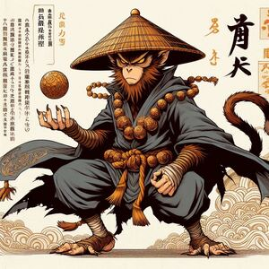

Imágenes
Monge Tang
Budista que emprende un extenso viaje para conseguir las escrituras de buda
Bodhisattva Kwang Shr-Ing
Ser celestial fiel adepta de Buda, encargada de obtener las escrituras de buda a manos del moje Tang

Mono Wu Kong
Mono hijo del cielo y la tierra hacerdor de portentosas habilidades mágicas. Primer Dísipulo y pricipal protector del moje Tang
Bonzo Sha
Dísipulo y protector del monge tang. Es poseedor de un poderoso Bacúlo
Zhu Bajie
Dísipulo y protector del monge tang. Es poseedor de un poderoso tridente de nueve picos capaz de desintegrar el espíritu de sus adversarios, es muy comelon y perezoso
Tang Sanzang
Dísipulo y protector del monge tang. Es un dragón que fue convertido en caballo para ser apto en la empresa de ser el corcel del moje tang